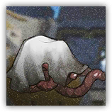
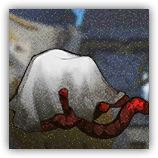

大君之触 Touch of the Sanguinarch
近战 物理；普通 萨卡兹
|  |
血魔大君的源石技艺造物。灵活，且难以击倒。在传言中，大君能够夺取来自其他生物的血液，并赋予血液新的生命，使其为自己所操控。 |
大君之触丨Touch of the Sanguinarch
小型异怪（萨卡兹），无阵营
AC 10
先攻 +0（10）
HP 9（2d6+2）
速度 20 尺
| 调整 | 豁免 | ||
|---|---|---|---|
| 力量 | 16 | +3 | +3 |
| 智力 | 1 | -5 | -5 |
| 调整 | 豁免 | ||
|---|---|---|---|
| 敏捷 | 11 | +0 | +2 |
| 感知 | 6 | -2 | -2 |
| 调整 | 豁免 | ||
|---|---|---|---|
| 体质 | 14 | +2 | +4 |
| 魅力 | 6 | -2 | -2 |
抗性 所有伤害
免疫 黯蚀
感官 盲视60尺，被动察觉11
语言 无
CR 1/2（XP 100；PB+2）
特质 Traits
重生造物 Reborn Creation。当仁慈之触因非光耀非重击伤害生命值降至0时，其进行一次敏捷豁免（DC为所受伤害）。豁免成功则改为将生命值降至1。
集群战术 Pack Tactics。若大君之触的攻击目标生物周围5尺范围内存在有至少一个未失能的盟友，则大君之触对该生物进行的攻击检定具有优势。
动作 Actions
汲取 Drain。近战攻击检定：+5，触及5尺。命中：7（1d6+3）黯蚀伤害，目标陷入受擒状态（逃脱DC13），此擒抱不导致目标移动速度归0，但是会导致目标的所有攻击检定具有劣势，且大君之触会吸附在目标身上直至擒抱结束。
仁慈之触 Gift of the Sanguinarch
近战 物理；普通 萨卡兹
|  |
血魔大君更精心的造物。灵活，且难以击倒。在传言中，大君能够夺取来自其他生物的血液，并赋予血液新的生命，使其为自己所操控。获得新生者，当感谢大君的仁慈。 |
仁慈之触丨Gift of the Sanguinarch
小型异怪（萨卡兹），无阵营
AC 11
先攻 +0（10）
HP 18（4d6+4）
速度 20 尺
| 调整 | 豁免 | ||
|---|---|---|---|
| 力量 | 16 | +3 | +3 |
| 智力 | 1 | -5 | -5 |
| 调整 | 豁免 | ||
|---|---|---|---|
| 敏捷 | 11 | +0 | +2 |
| 感知 | 6 | -2 | -2 |
| 调整 | 豁免 | ||
|---|---|---|---|
| 体质 | 14 | +2 | +4 |
| 魅力 | 6 | -2 | -2 |
抗性 所有伤害
免疫 黯蚀
感官 盲视60尺，被动察觉11
语言 无
CR 1（XP 200；PB +2）
特质 Traits
重生造物 Reborn Creation。当仁慈之触因非光耀非重击伤害生命值降至0时，其进行一次敏捷豁免（DC为所受伤害）。豁免成功则改为将生命值降至1。
集群战术 Pack Tactics。若仁慈之触的攻击目标生物周围5尺范围内存在有至少一个未失能的盟友，则大君之触对该生物进行的攻击检定具有优势。
动作 Actions
汲取 Drain。近战攻击检定：+5，触及5尺。命中：10（2d6+3）黯蚀伤害，目标陷入受擒状态（逃脱DC13），此擒抱不导致目标移动速度归0，但是会导致目标的所有攻击检定具有劣势，且仁慈之触会吸附在目标身上直至擒抱结束。